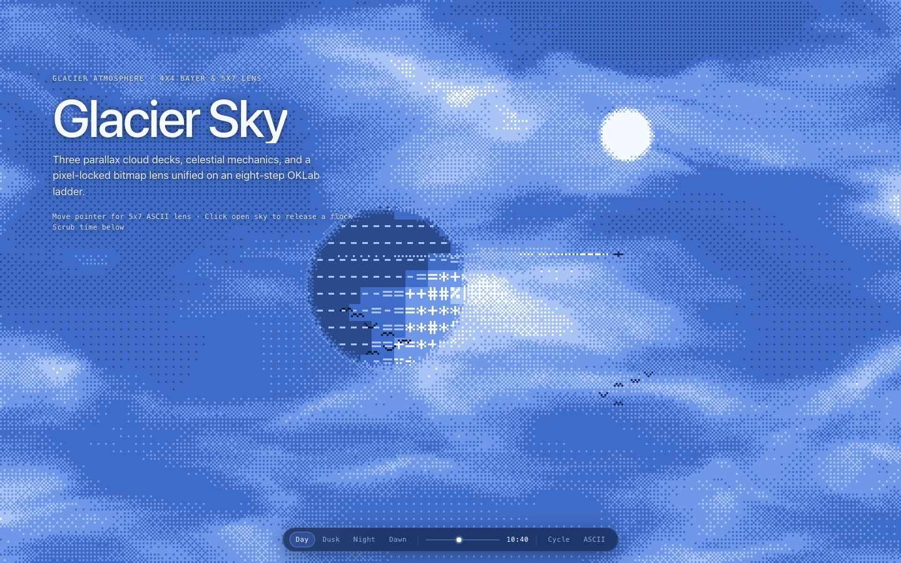
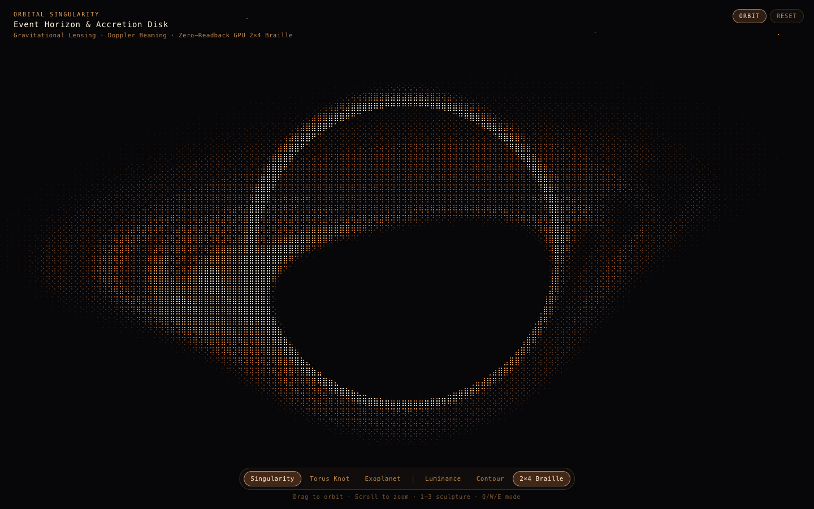
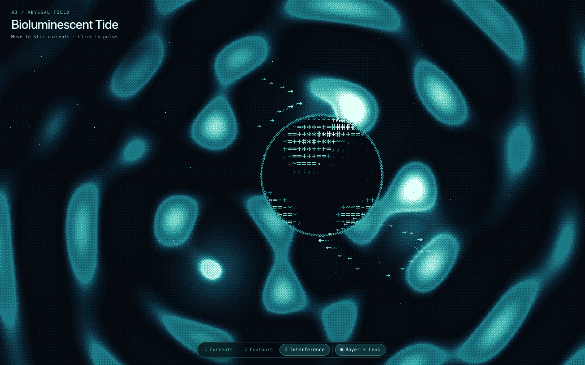
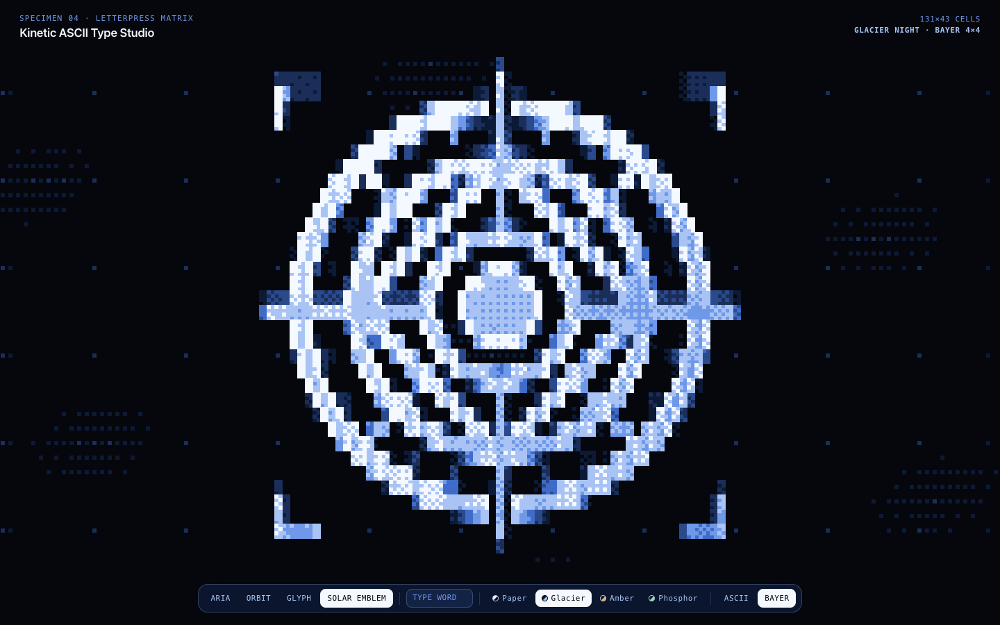

01 / ARCHETYPE A+EGlacier Sky & ASCII Lens
JoinAriapp-inspired 3-deck parallax cloudscape with full day-to-night cycle, Sun/Moon/Milky Way/Aurora, circular Bayer-rimmed 5×7 ASCII lens, full-ASCII toggle, and spring V-formation gull flocks.
Open 01-glacier-sky-lens.html →
02 / ARCHETYPE C3D Orbital Singularity
Gravitational ray-bending black hole, braided (2,3) Torus Knot, and Ringed Exoplanet on the Obsidian & Solar Amber ladder with Luminance ASCII, Directional Contours, and Zero-Readback GPU 2×4 Braille.
Open 02-3d-sdf-singularity.html →
03 / ARCHETYPE B+EBioluminescent Tide
Full-grid GPU 5×7 bitmap ASCII ocean currents, seabed iso-contours, and wave caustics with interactive pointer vortex wakes, click shockwaves, Bayer+Lens toggle, and swimming luminescent schools.
Open 03-bioluminescent-tide.html →
04 / ARCHETYPE DKinetic ASCII Type Studio
High-DPI tone-bucketed typography & Solar Emblem morpher with live custom text input, spring cursor turbulence, 4 OKLab palettes (Editorial Paper, Glacier Night, Amber, Phosphor), and ASCII/Bayer toggle.
Open 04-kinetic-ascii-type.html →